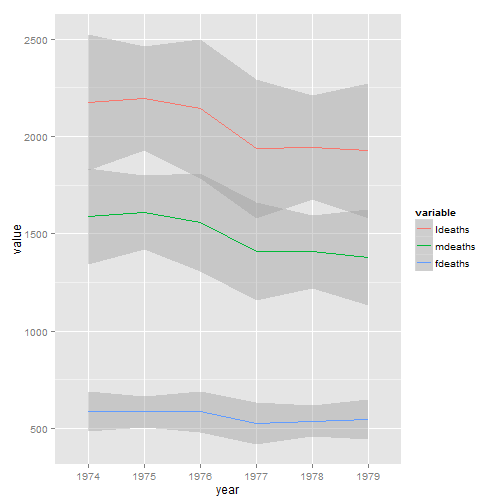
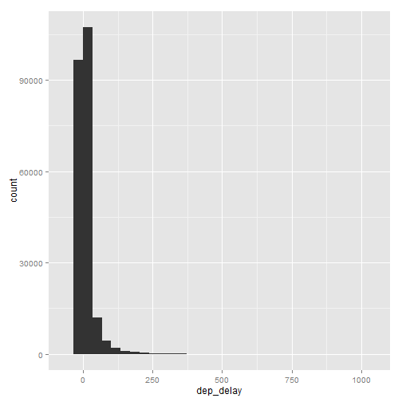

Getting data into shape
- Ran 10 experiments, now want to do a meta-analysis.
- I want to match my country level data with my individual-level data.
- I have time series data that looks like this:
## Code Country X1950 X1951 X1952 X1953 X1954
## 1 AFG Afghanistan 20,249 21,352 22,532 23,557 24,555
## 2 ALB Albania 8,097 8,986 10,058 11,123 12,246
I want it to look like this:
## Code Country variable value
## 1 AFG Afghanistan X1950 20,249
## 2 ALB Albania X1950 8,097
## 3 AFG Afghanistan X1951 21,352
## 4 ALB Albania X1951 8,986
## 5 AFG Afghanistan X1952 22,532
## 6 ALB Albania X1952 10,058
Stacking dataframes with rbind
Try the following:
load(url("https://cdn.rawgit.com/ylelkes/R_wav/master/data/rbindexercises.RData"))First, use colnames to look at the names of df1,df2,df3.
use rbind to stack df1, df2, and df3 into one dataframe.
Now try to add df4 to the stacked dataframe. How do we fix it?
Now add df5. Doesn't work? Try plyr::rbind.fill
What does the variables third and fourth look like for the df1:df4?
Merging in R is usually pretty simple with the merge command.
Exercise
- Let's start with merging two dataframes
- You always need a key that links data.frames, individual, country, etc.
- Merge the US state characteristic files state.x77 with this, with the variable Obamafeelings indicating a score on a feeling thermometer from 0=cold to 100=hot
load(url("https://cdn.rawgit.com/ylelkes/R_wav/master/data/anes.RData")) - Hint: state.x77 needs to be converted to a dataframe
- What state characteristics predict liking Obama?
Sometimes you want to merge based on multiple keys
- See what happens, and what your answers look like if you merge two of the datasets in the following file, first by country.name only, then by program.name only, then by both country.name and program.name. Note the dimensions, number of variables.
load(url("https://rawgit.com/ylelkes/R_wav/master/data/foreignaid.RData"))
Sometimes we want to merge more than two datasets.
- Use the following function to merge all the Aid datasets:
reshape::merge_all - Note, there are other ways of merging data. With really big datasets (N=millions), we probably want to use data.table or plyr.
Reshaping data

What makes data wide or long?
## ldeaths mdeaths fdeaths month year
## 1: 3035 2134 901 Jan 1974
## 2: 2552 1863 689 Feb 1974
## 3: 2704 1877 827 Mar 1974
## 4: 2554 1877 677 Apr 1974
## 5: 2014 1492 522 May 1974
## 6: 1655 1249 406 Jun 1974
What makes data wide or long?
## month year variable value
## 1: Jan 1974 ldeaths 3035
## 2: Feb 1974 ldeaths 2552
## 3: Mar 1974 ldeaths 2704
## 4: Apr 1974 ldeaths 2554
## 5: May 1974 ldeaths 2014
## ---
## 212: Feb 1979 fdeaths 379
## 213: Mar 1979 fdeaths 393
## 214: Apr 1979 fdeaths 411
## 215: May 1979 fdeaths 487
## 216: Jun 1979 fdeaths 574
Why is this useful?
Why is this useful?
library(dplyr)
meltedlungs %>% group_by(year) %>% summarise(average=mean(value),sd=sd(value),N=n())
## Source: local data table [6 x 4]
##
## year average sd N
## 1 1974 1452.222 750.0330 36
## 2 1975 1450.056 796.4717 36
## 3 1976 1428.778 876.3478 36
## 4 1977 1290.500 707.7449 36
## 5 1978 1330.611 747.4531 36
## 6 1979 1274.333 700.9802 36
Why is this useful?
library(dplyr)
meltedlungs %>% group_by(year,variable) %>% summarise(average=mean(value),sd=sd(value),N=n())
## Source: local data table [18 x 5]
## Groups: year
##
## year variable average sd N
## 1 1974 ldeaths 2178.3333 494.5983 12
## 2 1975 ldeaths 2175.0833 602.2528 12
## 3 1976 ldeaths 2143.1667 831.8715 12
## 4 1977 ldeaths 1935.7500 552.0763 12
## 5 1978 ldeaths 1995.9167 621.5696 12
## 6 1979 ldeaths 1911.5000 572.2454 12
## 7 1974 mdeaths 1589.2500 328.7890 12
## 8 1975 mdeaths 1603.9167 427.5011 12
## 9 1976 mdeaths 1558.0833 579.8723 12
## 10 1977 mdeaths 1410.5833 391.8700 12
## 11 1978 mdeaths 1444.0833 451.1524 12
## 12 1979 mdeaths 1369.7500 414.8553 12
## 13 1974 fdeaths 589.0833 169.7412 12
## 14 1975 fdeaths 571.1667 176.1502 12
## 15 1976 fdeaths 585.0833 252.6066 12
## 16 1977 fdeaths 525.1667 162.8479 12
## 17 1978 fdeaths 551.8333 170.8869 12
## 18 1979 fdeaths 541.7500 160.0080 12
Why is this useful?
library(ggplot2)
## Warning: package 'ggplot2' was built under R version 3.2.2
ggplot(meltedlungs,aes(x=year,y=value,group=variable,colour=variable))+geom_smooth()
## geom_smooth: method="auto" and size of largest group is <1000, so using loess. Use 'method = x' to change the smoothing method.

reshape2 package
- Reshape2 is based on two functions
- melt takes wide-format data and melts it into long-format data.
- cast takes long-format data and casts it into wide-format data.
melting data
melt(UKLung,id.vars=c("month","year"))
## month year variable value
## 1: Jan 1974 ldeaths 3035
## 2: Feb 1974 ldeaths 2552
## 3: Mar 1974 ldeaths 2704
## 4: Apr 1974 ldeaths 2554
## 5: May 1974 ldeaths 2014
## ---
## 212: Feb 1979 fdeaths 379
## 213: Mar 1979 fdeaths 393
## 214: Apr 1979 fdeaths 411
## 215: May 1979 fdeaths 487
## 216: Jun 1979 fdeaths 574
melting data
meltedlungs <- melt(UKLung,id.vars=c("month","year"),
variable.name = "Gender",value.name = "Deaths")
Getting data from long to wide
head(dcast(meltedlungs,year+month~Gender,value.var = "Deaths",fun.aggregate=mean,na.rm=T))
## year month ldeaths mdeaths fdeaths
## 1 1974 Jan 2773.5 1990 783.5
## 2 1974 Feb 2552.0 1863 689.0
## 3 1974 Mar 2704.0 1877 827.0
## 4 1974 Apr 2554.0 1877 677.0
## 5 1974 May 2014.0 1492 522.0
## 6 1974 Jun 1655.0 1249 406.0
Exercises
- Melt the
airqualitydata into long form, so that each of the measurements are in one column. - create a ggplot that tracks each measurement in a different facet.
- Recode the variable name with more descriptive labels, and change the order of the variable so that the order that appear in the legend are reversed. One way to do this is with the factor() function.
- cast the new data frame so you get yearly measurements in wide format.
dplyr
install.packages("dplyr")
flights <- tbl_df(read.csv(url("https://cdn.rawgit.com/ylelkes/R_wav/master/data/flights.csv")))
- Most useful package (for me) in R.
- Another St. Wickham creation.
- A tool for data exploration and transformation
5 verbs
- filter: keep rows matching criteria
- select: pick columns by name
- arrange: reorder rows
- mutate: add new variables
- summarise: reduce variables to values
What is our general m.o. if wanted rows 1,3, & 4?
df <- data.frame( color = c("blue", "black", "blue", "blue", "black"), value = 1:5)
head(df)
## color value
## 1 blue 1
## 2 black 2
## 3 blue 3
## 4 blue 4
## 5 black 5
What if we just wanted the "color" column
What if we just wanted the "color" column
select(df,color)
## color
## 1 blue
## 2 black
## 3 blue
## 4 blue
## 5 black
Or if we didn't want the "color" column
Or if we didn't want the "color" column
select(df,-color)
## value
## 1 1
## 2 2
## 3 3
## 4 4
## 5 5
Take a look at the handout
names(flights)
## [1] "date" "hour" "minute" "dep" "arr"
## [6] "dep_delay" "arr_delay" "carrier" "flight" "dest"
## [11] "plane" "cancelled" "time" "dist"
- What are some ways of selecting columns "dep_delay" and "arr_delay"
Selecting _delay
select(flights, arr_delay, dep_delay)
select(flights, arr_delay:dep_delay)
select(flights, ends_with("delay"))
select(flights, contains("delay"))
Arrange
arrange(df,value)
## color value
## 1 blue 1
## 2 black 2
## 3 blue 3
## 4 blue 4
## 5 black 5
Arrange
arrange(df,desc(value))
## color value
## 1 black 5
## 2 blue 4
## 3 blue 3
## 4 black 2
## 5 blue 1
Exercises
- Order the flights by departure date and time.
- Which flights were most delayed?
- Which flights caught up the most time during the flight?
Exercises
- arrange(flights, date, hour, minute)
- arrange(flights, desc(dep_delay))
- arrange(flights, desc(arr_delay))
- arrange(flights, desc(dep_delay - arr_delay))
Arrange
mutate(df,double= 2* value)
## color value double
## 1 blue 1 2
## 2 black 2 4
## 3 blue 3 6
## 4 blue 4 8
## 5 black 5 10
Arrange
mutate(df,double= 2* value,quadruple=2*double)
## color value double quadruple
## 1 blue 1 2 4
## 2 black 2 4 8
## 3 blue 3 6 12
## 4 blue 4 8 16
## 5 black 5 10 20
Exercises
- Compute speed in mph from time (in minutes) and distance (in miles).
- Which flight flew the fastest?
- Add a new variable that shows how much time was made up or lost in flight.
Grouped Summaries
summarise(df,total=sum(value))
## total
## 1 15
Grouped Summaries
by_color <- group_by(df,color)
summarise(by_color,total=sum(value))
## Source: local data frame [2 x 2]
##
## color total
## 1 black 7
## 2 blue 8
Grouped summaries
- by_date <- group_by(flights, date)
- by_hour <- group_by(flights, date, hour)
- by_plane <- group_by(flights, plane)
- by_dest <- group_by(flights, dest)
Summary functions
- min(x), median(x), max(x), quantile(x, p)
- n(), n_distinct(), sum(x), mean(x)
- sum(x > 10), mean(x > 10)
- sd(x), var(x), iqr(x), mad(x)
How might you summarise dep_delay for each day?
## stat_bin: binwidth defaulted to range/30. Use 'binwidth = x' to adjust this.

Summarise by date
by_date <- group_by(flights, date)
delays <- summarise(by_date,
mean = mean(dep_delay, na.rm = TRUE),
median = median(dep_delay, na.rm = TRUE),
q75 = quantile(dep_delay, 0.75, na.rm = TRUE),
over_15 = mean(dep_delay > 15, na.rm = TRUE),
over_30 = mean(dep_delay > 30, na.rm = TRUE),
over_60 = mean(dep_delay > 60, na.rm = TRUE) )
Summarise by date
by_date <- group_by(flights, date)
no_missing <- filter(flights, !is.na(dep))
delays <- summarise(by_date,
mean = mean(dep_delay, na.rm = TRUE),
median = median(dep_delay, na.rm = TRUE),
q75 = quantile(dep_delay, 0.75, na.rm = TRUE),
over_15 = mean(dep_delay > 15, na.rm = TRUE),
over_30 = mean(dep_delay > 30, na.rm = TRUE),
over_60 = mean(dep_delay > 60, na.rm = TRUE) )